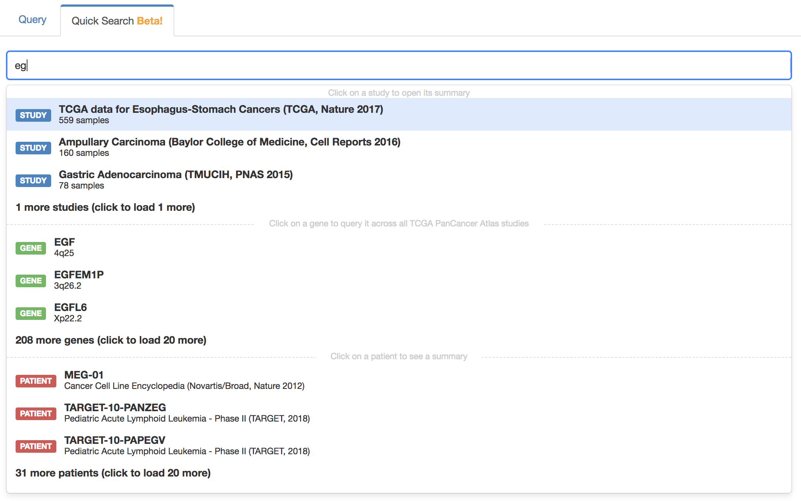
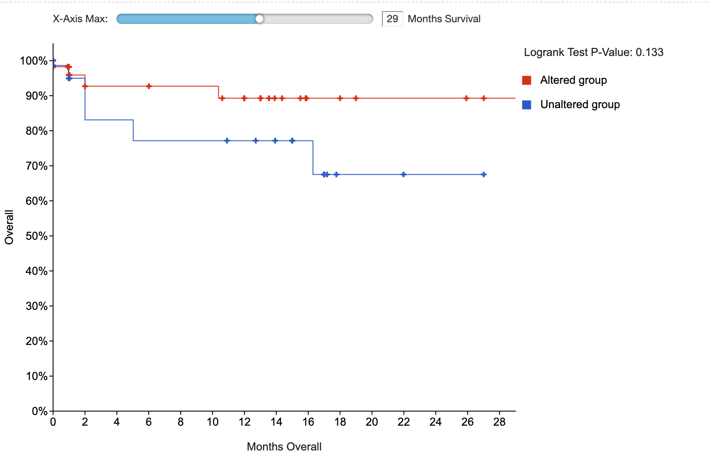

More application.properties Settings
This page describes the main properties within application.properties. Note that auth-related properties can be found in security.properties-Reference.
Database Settings
cBioPortal connects to ClickHouse via Spring Boot's standard datasource properties. Configure these in application.properties:
spring.datasource.url=jdbc:ch://<host>:<port>/<database>
spring.datasource.username=<your-db-user>
spring.datasource.password=<your-db-password>
spring.datasource.driver-class-name=com.clickhouse.jdbc.ClickHouseDriverFor example:
spring.datasource.url=jdbc:ch://localhost:8123/cbioportal
spring.datasource.username=cbio_user
spring.datasource.password=somepassword
spring.datasource.driver-class-name=com.clickhouse.jdbc.ClickHouseDrivercBioPortal Customization
Logging
# Root logging level (INFO, DEBUG, WARN, ERROR)
logging.level.root=INFOCache Configuration
# Cache type: ehcache-heap, ehcache-disk, ehcache-hybrid, redis, or no-cache
persistence.cache_type=no-cache
# Enable cache statistics endpoint
# cache.statistics_endpoint_enabled=false
# Enable cache management endpoint
# cache.endpoint.enabled=true
# API key for cache management endpoint access
# cache.endpoint.api-key=<uuid>OncoKB
# Enable OncoKB annotations
show.oncokb=true
# OncoKB public API URL
oncokb.public_api.url=https://public.api.oncokb.org/api/v1
# Your OncoKB token (required for therapeutic data)
oncokb.token=Genome Nexus
# Show Genome Nexus annotation columns in mutation table
# show.genomenexus.annotation_sources=mutation_assessor
# Default isoform override source (uniprot or mskcc)
# genomenexus.isoform_override_source=mskccSession Service
# URL for session service (used for saving/sharing queries)
session.service.url=https://cbioportal-session-service.herokuapp.com/session_service/api/sessions/heroku_portal/
# Optional basic auth for session service
# session.service.user=
# session.service.password=Server Configuration
# Connection timeout in ms
server.tomcat.connection-timeout=20000
# Max HTTP response header size
server.tomcat.max-http-response-header-size=16384
# Max HTTP request header size
server.max-http-request-header-size=16384
# Enable response compression
server.compression.enabled=trueSwagger / API Docs
# Swagger UI path
# springdoc.swagger-ui.path=/api/swagger-ui
# API docs path
# springdoc.api-docs.path=/api/v2/api-docsFull Reference
For a complete list of all available properties, see the application.properties.EXAMPLE file in the cbioportal repository.
Hide tabs (pages)
Settings controlling which tabs (pages) to hide. Set them to false if you want to hide those tabs, otherwise set the properties to true.
skin.show_data_tab=
skin.show_web_api_tab=
skin.show_r_matlab_tab=
skin.show_tutorials_tab=
skin.show_faqs_tab=
skin.show_news_tab=
skin.show_tools_tab=
skin.show_about_tab=Note: skin.show_tools_tab refers to the Visualize Your Data tab, while skin.show_data_tab refers to the Data Sets tab.
Show donate button
We kindly ask for your support by enabling the “Donate” button on your portals to help fund our mission. The button will direct users to https://docs.cbioportal.org/donate/, where they can learn more about how the funding is utilized. You can activate it through:
Cross Cancer Study Query Default
The cross cancer study query default is a list of studies used when querying one or more genes and not specifying a specific study or list of studies. There are two ways in which the default cross cancer study list is used:
- When using the linkout links without a study e.g.
/ln?q=TP53:MUT. Those links are used mostly used to allow for easy linking to particular queries. One can't get those links using the cBioPortal user interface itself, they are only mentioned in the documentation of the Web API (https://www.cbioportal.org/webAPI). - In the quick search when querying for a gene. Quick search is disabled by default. It is a beta feature. See the
quick search documentation .
The configuration is set with the following if you have session service enabled:
default_cross_cancer_study_session_id=The title will be pulled from the virtual study. Make sure to create a virtual_study with studies that everybody has access to and don't use a main_session id.
If session service is disabled one can use the following instead:
# query this comma separated list of studies
default_cross_cancer_study_list=
default_cross_cancer_study_list_name=Quick Search (BETA)

Enable or disable the quick search with the following:
# Enable/Disable quick search (default is false)
quick_search.enabled=trueThe default studies queried when searching for a single gene is defined with the default_cross_cancer_study_session_id or default_cross_cancer_study_list properties as described in the
Hide sections in the right navigation bar
Settings controlling what to show in the right navigation bar. Set them to false if you want to hide those sections, otherwise set the properties to true.
#Interactive tours section skin.right_nav.show_web_tours=
Control the content of specific sections
Setting controlling the blurb: you can add any HTML code here that you want to visualize. This will be shown between the cBioPortal menu and the Query selector in the main page.
skin.blurb=Setting controlling the citation below the blurb: you can add any HTML code here that you want to visualize. If the field is left empty, this HTML code will be shown: Please cite: <a href="https://cancerdiscovery.aacrjournals.org/content/2/5/401.abstract" target="_blank">Cerami et al., 2012</a> & <a href="https://www.ncbi.nlm.nih.gov/pubmed/23550210" target="_blank">Gao et al., 2013</a>).
skin.citation_rule_text=Setting controlling the footer: you can add any HTML code here that you want to visualize. If the field is left empty, the default footer (from www.cbioportal.org) will be shown.
skin.footer=Setting controlling listing the development channels in the site's footer section
skin.footer_show_dev=Settings controlling the "What's New" blurb in the right navigation bar: you can add any HTML code here that you want to visualize. If the field is left empty, the Twitter timeline will be shown (as long as skin.right_nav.show_whats_new is true, otherwise this section will not be displayed).
skin.right_nav.whats_new_blurb=Add custom logos to the left or right side of the header section. Place here the full name of the logo file (e.g. logo.png). This file should be present in $PORTAL_HOME/portal/images/.
skin.left_logo=
skin.right_logo=Prevent users from saving data by removing all Download tabs and download and copy-to-clipboard controls.
skin.hide_download_controls=Quick select buttons
This feature allows you to generate a Quick Select button on the top of your query page. The button, when clicked on, will automatically select the studies mentioned after the '#`.
The format for the string should be <Button name>|<Mouse-over text>#study1a,study1b,.... where:
<Button name>will be the label on the button (for e.g. TCGA PanCancer Atlas Studies, Curated set of non-redundant studies)<Mouse-over text>will be the text that is displayed when you hover over the button (for e.g. 218 studies that are manually curated including TCGA and non-TCGA studies with no overlapping samples)study1a,study1b,....are the study IDs of the loaded studies that should be selected when the button is clicked. (for e.g. acbc_mskcc_2015,acc_tcga_pan_can_atlas_2018)
Control default setting for filtering of genes in mutation and CNA tables of patient view
Different samples of a patient may have been analyzed with different gene panels. In patient view mutations and discrete CNA's can be filtered based on whether the gene of respective mutations/CNA's was profiled in all samples of the patient (mutations profiled in all samples), or not (mutations profiled in any sample). Setting this field to true will make patient view select the all samples filter at startup. When set to false or left blank the patient view will default to the any samples filter setting.
skin.patientview.filter_genes_profiled_all_samples=Control default settings of the VAF line chart in the genomic evolution tab of patient view
If you want to enable log scale and sequential mode by default, set this property to true:
vaf.log_scale.default=true|false
vaf.sequential_mode.default=true|falseControl unauthorized studies to be displayed on the home page
By default, on an authenticated portal the home page will only show studies for which the current user is authorized. By setting the skin.home_page.show_unauthorized_studies property to true the home page will also show unauthorized studies. The unauthorized studies will appear greyed out and cannot be selected for downstream analysis in Results View or Study View.
If show_unauthorized_studies feature has been enabled, a message (template) can be defined by the property below that informs the user of insufficient permissions. This message will appear inside a tooltip when hovering the lock icon next to the study name on the Study Selection page. This message may contain placeholders for study-specific information derived from study tags data. The information in the study tags JSON file can be accessed using Json Path placeholders. For example {$.Owner.email} points to member {Owner: {email: "me@myself.org"}}. For the studies that don't have this information available in the study tags, the default message "The study is unauthorized. You need to request access." will be displayed. In addition to the study tags information, the cancer study identifier can be included in the message using {.studyId} placeholder (does not have to be present in study tags file). For example: skin.home\_page.unauthorized\_studies\_global\_message=You do not have access to this study. You can request access with {.Owner.email} (please mention the '{$.studyId}' study identifier).
Show badge with reference genome
In instances with hg19 and hg38 studies you can show the reference genome in the home page next to the number of samples. This can be done setting this property to true (false by default):
skin.home_page.show_reference_genome=Control the appearance of the settings menu in study view and group comparison that controls custom annotation-based filtering
A settings menu that allows the user to filter alterations in study view and group comparison may be used when custom driver annotations were loaded for the study or studies displayed in these sections. This menu will only appear, when setting the property skin.show_settings_menu to true.
Hide logout button
When the user is logged-in, a button with logout and data access token options is shown at the right side of the header section. This button can be hidden by setting the property _skin.hide_logout_button to true (default is false). Hiding the logout button will remove the ability to perform a manual logout and download data access tokens by the user.
Namespace columns visible in Mutation Table by default
Namespace columns are custom columns in the MAF file that can be shown in Mutation Table components. By setting this property to true these columns will be visible when the mutation table is created. By default, the namespace column is hidden and can be made visible using the column selection menu.
skin.mutation_table.namespace_column.show_by_default=Default visible columns on init in Mutation, Copy-Number and Structural Variant Tables
Define the columns that are going to be visible in the Mutation, Copy-Number and Structural Variant Tables on the Patient View and the Mutation Table in the Results View. The skin.mutation_table.namespace_column.show_by_default takes precedence over these settings for namespace columns.
skin.results_view.mutation_table.columns.show_on_init=
skin.patient_view.mutation_table.columns.show_on_init=
skin.patient_view.copy_number_table.columns.show_on_init=
skin.patient_view.structural_variant_table.columns.show_on_init=Default sort columns on Mutation, Copy-Number and Structural Variant Tables
Define the column that are going to sort be default in the Mutation, Copy-Number and Structural Variant Tables on the Patient View and the Mutation Table in the Results View. Column name should be exactly the same as shown in tables.
skin.results_view.tables.default_sort_column=
skin.patient_view.tables.default_sort_column=Define custom sample type colors
Define the colors of custom sample types in the patient view using a json object with for each sample type a color:
skin.patient_view.custom_sample_type_colors_json=classpath:/skin-patient-view-custom-sample-type-colors.jsonExample of json file contents:
{
"Primary": "green",
"Biopsy 3": "#00c040ff"
}Hide p- and q-values in survival types table
# Show/hide p- and q-values in survival types table (default is true)
survival.show_p_q_values_in_survival_type_table=Set the initial x-axis limit for the survival plot
By default, the initial x-axis limit for a survival plot is the time of the latest event in the data. With this setting, you can make the initial x-axis limit be smaller than that.

# Set initial x-axis limit for survival plot (by default, initial limit will be the latest event in the data)
survival.initial_x_axis_limit=Display installation map
This setting specifies the URL for the iframes of a given portal's installation map on the homepage and standalone page. By default, the installation map configuration is commented out with the iframes and standalone page hidden. The configuration below is used for https://www.cbioportal.org/.
installation_map_url=https://installationmap.netlify.app/To set up an installation map instance, one may consult the source code for the installation map here.
Show structural variants table on study view
The structural variants table widget on study view allows users to define cohorts based on gene-orientation specific structural variant data format (see here). The structural variants table widget supports cohort selection based on gene1, gene2 and gene1/gene2 orientation specific genomic events. This property enables the structural variants table widget on Study View.
⚠️ Although gene1 and gene2 specific queries may be used to investigate up- and downstream fusion partners, respectively, the validity of this depends on supports for this interpretation in the underlying data.
skin.study_view.show_sv_table=trueEnsembl transcript lookup URL
The Mutations tab contains various links, redirecting the user to external information resources regarding the displayed transcript. The Ensembl template URL can be customized by modifying the property:
ensembl.transcript_url=The default setting is https://ensembl.org/homo_sapiens/Transcript/Summary?t=<%= transcriptId %>. The <%= transcriptId %> is substituted by the frontend code into respective transcript ID.
Segment File URL
This is a root URL to where segment files can be found. This is used when you want to provide segment file viewing via external tools such as IGV.
segfile.url=Bitly API Username and Key
The following properties are used to provide shortened bookmarks to the cBioPortal:
bitly.user=
bitly.api_key=To obtain a bitly username and key, first register at: https://bitly.com/
Then, go to: https://bitly.com/a/your\_api\_key
Note: If you are developing on a local machine, and using localhost, the bitly URL shortening service will not work. This is because bitly will not shorten URLs for localhost. Once you deploy to your final server, the issue should go away.
Google Analytics
When the following property is defined, Google Analytics will track site usage.
⚠️ In contrast to what this property's name suggests, this should be the GA Universal Analytics ID (UA-XXXXX-YY), not to be confused with the new GA-4 ID, introduced in 2020. A Universal Analytics GA property can be created at Google Analytics, create a new GA property, and make sure to click Show advanced options and switch on Create a Universal Analytics property. After creating a Universal Analytics property, the tracking ID can be found at Admin, column property, under Property Settings
⚠️ Adblockers may block site tracking by GA
google_analytics_profile_idPassword Authentication
The portal supports password authentication via Google+. Before you start you need to setup a google account that will own the authentication API. Follow https://developers.google.com/identity/sign-in/web/devconsole-project to get clientID and secret. Fill it in application.properties:
googleplus.consumer.key=195047654890-499gl89hj65j8d2eorqe0jvjnfaxcln0.apps.googleusercontent.com
googleplus.consumer.secret=2jCfg4SPWdGfXF44WC588dK(note: these are just examples, you need to get your own) You will also need to go to "Google+ API" and click Enable button. In case of problems make sure to enable DEBUG logging for org.springframework.social and org.springframework.security.web.authentication.
To activate password authentication follow the Deployment with authentication steps and set authenticate=googleplus.
In addition, set this property in application.properties:
app.name=cbioportalapp.name should be set to the name of the portal instance referenced in the "AUTHORITY" column of the "AUTHORITIES" table. See the User Authorization for more information.
OncoKB integration
OncoKB integration can be turned on or off with the following property (default: true):
show.oncokb=true|falseA private token is required to access the OncoKB Data (for details see the section OncoKB Data Access):
oncokb.token=CIViC integration
CIViC integration can be turned on or off with the following property (default: true):
show.civic=true|falseThe CIViC API url is set to https://civic.genome.wustl.edu/api/ by default. It can be overridden using the following property:
civic.url=Genome Nexus Integration
Genome Nexus provides annotations of mutations in cBioPortal. The mutations tab relies heavily on the Genome Nexus API, therefore that tab won't work well without it. By default cBioPortal will use the public Genome Nexus API, such that no extra configuration is necessary.
Genome Build
Genome Nexus supports both GRCh37 and GRCh38, but support for the latter is limited. Several annotation sources served by Genome Nexus might not have official GRCh38 support yet i.e. OncoKB, CIViC, Cancer Hotspots, My Cancer Genome and 3D structures. Although most of the time the canonical transcript for a gene will be the same between GRCh37 and GRCh38 there might be some that cause issues. In addition the complete integration of cBioPortal with Genome Nexus' GRCh38 is not complete yet. That is cBioPortal currently only connects to one Genome Nexus API by default (the GRCh37 one), so it's not possible to have multiple genome builds in one instance of cBioPortal and get the correct annotations from Genome Nexus for both. Currently only the mutation mapper tool page is able to handle both.
Properties
By default the Genome Nexus API url is set to https://v1.genomenexus.org/, which uses GRCh37. It can be overridden using the following property:
genomenexus.url=Genome Nexus provides a set of mappings from Hugo genes names to Ensembl transcript IDs. There are two mappings: mskcc and uniprot.
You can read more about the difference between those in the Mutation Data Annotation Section. The default is currently uniprot, but we recommend new installers to use mskcc and people with older installations to consider migrating. The property
can be changed with:
genomenexus.isoform_override_source=mskccThe mutation mapper tool page can annotate GRCh38 coordinates. By default it uses https://grch38.genomenexus.org. It can be overridden by setting:
genomenexus.url.grch38=The GRCh38 annotation in mutation mapper can be hidden by setting show.mutation_mappert_tool.grch38=false, by default it's set to true.
MDACC Heatmap Integration
MDACC Heatmap integration (button in OncoPrint heatmap dropdown and tab on Study page can be turned on or off by setting the following property:
show.mdacc.heatmap=trueOncoPrint
The default view in OncoPrint ("patient" or "sample") can be set with the following option. The default is "patient".
oncoprint.defaultview=sampleConfiguration of tracks that will be visible by default in the oncoprint. It points to a JSON file on the classpath.
oncoprint.clinical_tracks.config_json=classpath:/oncoprint-default-tracks.jsonCustom annotation of driver and passenger mutations
cBioPortal supports 2 formats to add custom annotations for driver and passenger mutations.
- cbp_driver: This will define whether a mutation is a driver or not.
- cbp_driver_tiers: This can be used to define multiple classes of driver mutations.
These data formats are described in the cBioPortal MAF specifications.
Enabling custom annotations in the OncoPrint
To enable functionality for one or both types of custom annotations, enter values for the following properties. These values will appear in the OncoPrint's "Mutation color" menu, Patient View's (mutation, CNA, SV) tables, Results View's mutation table, and Group Comparison View's mutation table.
oncoprint.custom_driver_annotation.binary.menu_label=Custom Driver
oncoprint.custom_driver_annotation.binary.menu_description=Custom driver tiers
oncoprint.custom_driver_annotation.tiers.menu_label=Custom Driver Tiers
oncoprint.custom_driver_annotation.tiers.menu_description=Custom driver tiersAutomatic selection of OncoKB, hotspots and custom annotations
OncoKB and Hotspots are by default automatically selected as annotation source, if show.oncokb and show.hotspots are set to true. To add automatic selection of custom driver or custom driver tiers annotations, set the respective property to true. Default is false.
oncoprint.custom_driver_annotation.binary.default=true|false
oncoprint.custom_driver_annotation.tiers.default=true|falseIf you want to disable the automatic selection of OncoKB and hotspots as annotation source, set these properties to false:
oncoprint.oncokb.default=true|false
oncoprint.hotspots.default=true|falseIf you want to enable oncoprint heatmap clustering by default, set this property to true:
oncoprint.clustered.default=true|falseAutomatic hiding of variants of unknown significance (VUS)
By default, the selection box to hide VUS mutations is unchecked. If you want to automatically hide VUS, set this property to true. Default is false.
oncoprint.hide_vus.default=true|falseGene sets used for gene querying
To change the gene sets used for gene querying, create a JSON file and add gene sets, following the format specified in the examples below. Set the path to this file (e.g. file:/cbioportal/custom_gene_sets.json) in the following property and restart Tomcat to apply the update. The default gene sets will be replaced by the ones in custom_gene_sets.json.
querypage.setsofgenes.location=file:/<path>Example with gene names
In this example, two gene sets will appear in the query page, under the names "Prostate Cancer: AR Signaling" and "Prostate Cancer: AR and steroid synthesis enzymes".
[{
"id": "Prostate Cancer: AR Signaling",
"genes": ["SOX9", "RAN", "TNK2", "EP300", "PXN", "NCOA2", "AR", "NRIP1", "NCOR1", "NCOR2"]
}, {
"id": "Prostate Cancer: AR and steroid synthesis enzymes",
"genes": ["AKR1C3", "AR", "CYB5A", "CYP11A1", "CYP11B1", "CYP11B2", "CYP17A1", "CYP19A1", "CYP21A2", "HSD17B1", "HSD17B10", "HSD17B11", "HSD17B12", "HSD17B13", "HSD17B14", "HSD17B2", "HSD17B3", "HSD17B4", "HSD17B6", "HSD17B7", "HSD17B8", "HSD3B1", "HSD3B2", "HSD3B7", "RDH5", "SHBG", "SRD5A1", "SRD5A2", "SRD5A3", "STAR"]
}]Example with specific alterations
In this example, only one gene set will appear in the query page, under the name "Genes with alterations", which will add the different genetic alterations stated below in the query box.
[{
"id": "Genes with alterations",
"genes": ["TP53: MUT=R273C;", "KRAS: HOMDEL MUT=NONSENSE MUT=NONSTART MUT=NONSTOP MUT=FRAMESHIFT MUT=SPLICE MUT=TRUNC;"]
}]Example with merged gene tracks
In this example, only one gene set will appear in the query page, under the name "BRCA genes test", containing the merged gene track called "BRCA genes".
[{
"id": "BRCA genes test",
"genes": ["[\\\"BRCA genes\\\" BRCA1: MUT=E1258D;", "BRCA2: HOMDEL MUT=NONSENSE MUT=NONSTART MUT=NONSTOP MUT=FRAMESHIFT MUT=SPLICE MUT=TRUNC;]"]
}]This gene set will add the following in the query box:
"BRCA genes" BRCA1: MUT=E1258D; BRCA2: HOMDEL MUT=NONSENSE MUT=NONSTART MUT=NONSTOP MUT=FRAMESHIFT MUT=SPLICE MUT=TRUNC;Cache Settings
cBioPortal is supported on the backend with Ehcache or Redis. These caches are configurable from within application.properties through the following properties.
The cache type is set using persistence.cache_type. Valid values are no-cache, redis (redis), ehache-heap (ehcache heap-only), ehache-disk (ehcache disk-only), and ehache-hybrid (ehcache disk + heap). By default, persistence.cache_type is set to no-cache which disables the cache. When the cache is disabled, no responses will be stored in the cache.
⚠️ the 'redis' caching option will likely cause a conflict when installing the portal in a Tomcat installation which uses redisson for session management. If you plan to deploy cbioportal to such a system, avoid the 'redis' caching option for persistence.cache_type and be sure to build cbioportal.war with the maven option -Dexclude-redisson (see Building with Maven).
persistence.cache_type=[no-cache or ehache-heap or ehcache-disk or ehcache-hybrid or redis]Logged metrics and additional information such as cache size and cached keys are available through an optional endpoint. The optional endpoint is turned off by default but can be turned on by setting cache.statistics_endpoint_enabled to true.
cache.statistics_endpoint_enabled=false[true or false]The cache statistics endpoint is hidden on the api page; users must directly access the URL to view the response. The cache statistics endpoint can be accessed in the following ways.
For a list of all keys in the cache:
/api/[name of cache]/keysInCacheFor a list of counts of keys in cache per repository class:
/api/[name of cache]/keyCountsPerClassFor general statistics about the cache such as memory usage (not currently implemented for Redis):
/api/cacheStatisticsWARNING: It must be noted that since cache statistics endpoint returns data on cache keys, the endpoint may expose otherwise hidden database query parameters such as sample identifiers, study names, etc. Generally, it is recommended that the endpoint only be turned on during cache-related development for testing. Deployers of a protected portal where users only have authorities to a subset of studies should carefully consider whether or not to turn on the cache statistics endpoint, as it does not filter the results.
For more information on how caching is implemented in cBioPortal refer to the Caching documentation.
Redis
To cache with Redis set persistence.cache_type to redis.
Note: Redis is always optional. If Redis is unavailable, the application will start without caching and automatically fallback to database queries.
To setup the Redis cache servers the following properties are required:
redis.name=unique_cbioportal_instance_name
redis.leader_address=redis://{host/servicename}:6379
redis.follower_address=redis://{host/servicename}:6379
redis.database=0
redis.password=passwordIf you are running one redis instance for multiple instances of cBioPortal, one can use the properties redis.name and redis.database to avoid clashes. If you are running only one instance of cBioPortal any value for name/database will do.
There are also some optional parameters:
redis.clear_on_startup: If true, the caches will clear on startup. This is important to do to avoid reading old study data from the cache. You may want to turn it off and clear redis yourself if you are running in a clustered environments, as you'll have frequent restarts that do not require you to clear the redis cache.
redis.ttl_mins: The time to live of items in the general cache, in minutes. The default value is 10000, or just under 7 days.
redis.health_check_interval_ms: The interval in milliseconds to wait before retrying Redis operations after a failure. This prevents repeated connection attempts when Redis is down, improving performance. Default is 30000 (30 seconds).
For more information on Redis, refer to the official documentation here
Ehcache
To cache with Ehcache set persistence.cache_type to ehache-heap (ehcache heap-only), ehache-disk (ehcache disk-only), or ehache-hybrid (ehcache disk + heap).
Ehcache initializes caches using a template found in an Ehcache xml configuration file. When caching is enabled, set ehcache.xml_configuration to the name of the Ehcache xml configuration file. The default provided is ehcache.xml; to change the cache template, directly edit this file. Alternatively, you can create your own Ehcache xml configuration file, place it under /persistence/persistence-api/src/main/resources/ and set ehcache.xml_configuration to /[Ehcache xml configuration filename].
ehcache.xml_configuration=If the cache is configured to use disk resources, users must make a directory available and set it with the ehcache.persistence_path property. Ehcache will create separate directories under the provided path for each cache defined in the ehcache.xml_configuration file.
ehcache.persistence_path=[location on the disk filesystem where Ehcache can write the cache to /tmp/]Cache size must be set for heap and/or disk depending on which are in use; Ehcache requires disk size to be greater than heap size in a hybrid configuration. Zero is not a supported size and will cause an exception. Units are in megabytes. Default values are provided. The general repository cache is specified to use 1024MB of heap and 4096MB of disk. The static repository cache is specified to use 30MB of heap and 32MB of disk. For installations with increased traffic or data, cache sizes can be increased to further improve performance.
ehcache.general_repository_cache.max_mega_bytes_heap=
ehcache.general_repository_cache.max_mega_bytes_local_disk=
ehcache.static_repository_cache_one.max_mega_bytes_heap=
ehcache.static_repository_cache_one.max_mega_bytes_local_disk=For more information on Ehcache, refer to the official documentation here
Evict caches with the /api/cache endpoint
DELETE http requests to the /api/cache endpoint will flush the cBioPortal caches, and serves as an alternative to restarting the cBioPortal application.
By default the endpoint is disabled. The endpoint can be enabled by setting:
cache.endpoint.enabled=trueAccess to the endpoint is not regulated by the configured user authorization mechanism. Instead, an API key should be passed with the X-API-KEY header. The accepted value for the API key can be configured by setting (for example):
cache.endpoint.api-key=7d70fecb-cda8-490f-9ea2-ef874b6512f4Delegate user-authorization cache to Spring-managed cache
For evaluation fo user permissions cBioPortal uses a user-authorization cache that is populated at startup. By setting the cache.cache-map-utils.spring-managed property to true this cache will be managed by the Spring caching solution such as EHCache or Redis. For more extended information, see here
Enable GSVA functionality
GSVA functionality can be enabled by uncommenting this line (and making sure it is set to true):
skin.show_gsva=trueSet default thresholds for geneset hierarchy
skin.geneset_hierarchy.default_gsva_score=0.3
skin.geneset_hierarchy.default_p_value=0.02Collapses the tree widget of the geneset hierarchy dialog on initialization
By default, the tree is expanded (property value is false).
skin.geneset_hierarchy.collapse_by_default = trueCross study expression and protein data
By default we hide expression data for multi-study queries as they are usually not normalized across studies. For the public cBioPortal for instance, only TCGA Pancan Atlas studies expression data has been normalized.
If you know the expression data in your instance is comparable, or is comparable for a subset of studies, you can configure a rule as follows.
The value of this property can be boolean (true|false) or a javascript function which executes at runtime and is passed the list of study objects being queried by the user and evaluates whether expression data can be safely displayed.
// a function that accepts the users's selected studies and
// returns whether or not to allow expression data from the involved studies to be mixed
enable_cross_study_expression = (selectedStudies)=>{ [your logic] return true|false }// boolean
enable_cross_study_expression = true|falseCombined Study View Summary Limits
Background
A limit is added to prevent poor performance of Study View when selecting too large sample numbers.
Properties
studyview.max_samples_selected: Limit is disabled when not set
Behavior
When these limits are exceeded the "Explore Selected Studies" button will be disabled on the Study View Page.
Request Body Compression
Background
Some REST endpoints that the cBioPortal frontend uses have request bodies that scale as your dataset increases. In portals where users commonly query more than 100,000 samples, we found that some of these request bodies could get as large as 20 Mb. These large request bodies pose a significant problem for users with poor upload speeds - some users experienced upload times of more than five minutes for these requests. Request body compression is our temporary solution to this problem. When this feature is toggled on, we compress the request bodies of a few problematic endpoints.
Properties
There are two portal.property values related to this feature:
enable_request_body_gzip_compression: whentrue, the feature will be enabled.request_gzip_body_size_bytes: the maximum allowable unzipped request body in bytes. Defaults to 80000000 (80 Mb).
Behavior
- This is a nonbreaking change. Any consumers of the cBioPortal API you have that send requests with uncompressed request bodies will continue to work, regardless of whether you turn this feature on or off.
- If you turn this feature on, the cBioPortal API will now be able to handle any request with a gzipped request body, provided:
- It is a POST request.
- It has a
Content-Encoding: gzipheader.
Reasons to Enable This Feature
- You have studies with tens of thousands of samples.
- You have users with poor upload speeds (< 1mb up).
Reasons to Disable This Feature
- It is harder to debug gzipped requests
- Chrome's
copy request as CURLwill not work. - The compressed request body is not human-readable.
- Chrome's
- It is a potential vector for denial of memory attacks.
- Any request that has a body that takes significantly more space in memory than it does in the request body is potentially dangerous. We try to mitigate this by limiting the size of the unzipped request body via the
request_gzip_body_size_bytesproperty, but at a fundamental level, this is still a concern. - Along these lines, if you do enable this feature, setting
request_gzip_body_size_bytesto an arbitrarily large number would be unwise.
- Any request that has a body that takes significantly more space in memory than it does in the request body is potentially dangerous. We try to mitigate this by limiting the size of the unzipped request body via the
- This is not a cure-all for performance issues
- Most requests the cBioPortal makes do not have large request bodies, so most requests will not be compressed, and will see no performance improvement.
- Users with good upload speeds will see minimal performance improvements, as their upload speed is not a bottleneck.
DataSets Tab (Study Download Links)
Background
The DataSets tab has the ability to create a download button that allows users to quickly download "raw" public studies.
Properties
study_download_url: when set, the feature will be enabled
Behavior
For private instances that want to replicate thepublic-portal they first must set up their studies
they want available for download in a similar format to what is described in the Example section below.
The studies are located on the public-portal at https://datahub.assets.cbioportal.org/.
Then there is a study_list.json defined that list the studies that can be downloaded.
The studies to be downloaded need to be compressed with the extension tar.gz
Example
- We have set
study_download_urlproperty tohttps://datahub.assets.cbioportal.org/ study_list.jsonresideshttps://datahub.assets.cbioportal.org/study_list.json[ "acbc_mskcc_2015", "acc_2019"]Example of contents
acbc_mskcc_2015.tar.gzresideshttps://datahub.assets.cbioportal.org/acbc_mskcc_2015.tar.gz
Prioritized studies on study selector view
By default, the studies loaded into a local cBioPortal instance are organized based on their cancer type (i.e. Breast >> Other).
priority_studies=The value of this variable will create a custom category with studies on the top of the study selector view. The format for the string should be category1#study1a,study1b,study1c;category2#study2 (e.g., PanCancer Studies#msk_impact_2017), where the category can be any string and the study should be the study ID of the required uploaded study.
Study Tag functionality
Study Tags allow portal maintainers to define miscellaneous descriptive meta data to studies, which will be shown to users in tooltips and are also searchable. This feature is on by default but can be disabled using the following property.
//boolean
enable_study_tags=true|falseAdd Custom Buttons to data tables
Custom Buttons can be defined which will conditionally appear in all group comparison data tables (with CopyDownloadControls) to launch a custom URL. This can be used, for example, to launch a software application (that is installed on the user's system) with the data. This configuration can also customize new elements on the Visualize page. It points to a JSON file. (See download_custom_buttons reference).
UptimeRobot Integration
Display automatic service status banners when incidents or maintenance are detected from UptimeRobot.
uptime_robot_status_page_url=https://status.cbioportal.org
uptime_robot_api_key=RlrzpsmAnBoth properties are required to enable the integration. When configured, the portal will automatically fetch and display active events as banners at the top of the page.
See UptimeRobot Integration for setup instructions.